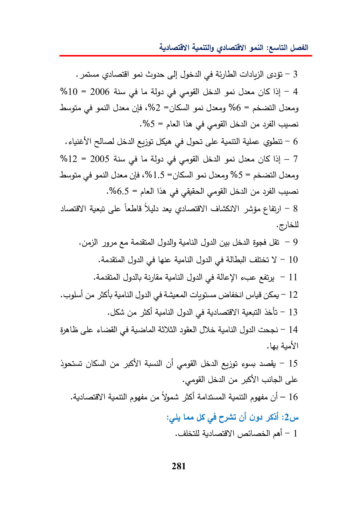

:euitill+gai(ol)—3%10=2006ais(ciLeAlgagdgad3]-4(AgaillJane%6=aduciillSaray=plallVdaUdallgeGnaselse)Gdgadcle-6%12=2005AisLecapilUdallgadaes—7gaill6701.5=%5=Janey=VeallgeyallGuatdadleLbSubwy-8ygaeGayUdallUi—9gall44Y-10Aralsueati-11GyeASGOEL!Sa-12yeAS)Ss-13ByalaleagiellDSUpall14GallyooFUdallaun—15JSallge5S}GallayoYgad$5)Apaitllaggieoi—16LesJScbCydGIO99SHI-1281